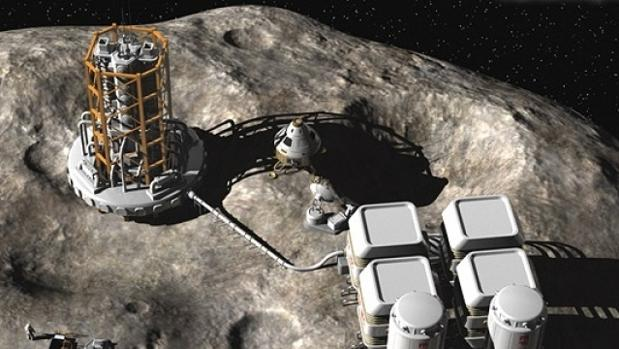

La ciencia detras de la mineria espacial
Basandose en las reservas conocidas terrestres y el creciente consumo en los paises en desarrollo, se especula que los elementos clave necesarios para la industria moderna, incluyendo antimonio, zinc, estaño, plata, plomo, indio, oro y cobre, podrian agotarse en la Tierra dentro de 50 a 60 años En respuesta, se ha sugerido que el platino, cobalto y otros elementos valiosos de los asteroides puedan ser extraidos y enviados a la Tierra con fines de lucro, y el agua extraida de hielo podria ser usada para los propulsores de depositos de energia solar espacial, y los habitats del espacio.

Como lograremos minar los asteroides
Una de las diferencias claves entre las misiones de Virgin Galactic, Blue Origin y Space X, es que las primeras dos misiones fueron vuelos al espacio suborbital, en donde los viajeros se expusieron brevemente a la ingravidez y pudieron ver las vistas del espacio durante un vuelo al borde de la atmósfera, a aproximadamente 96 kilómetros sobre la Tierra.
Tanto los vuelos tripulados por Branson y Bezos fueron breves, ya que subieron y bajaron el mismo día.
La SpaceShipTwo de Virgin Galactic se elevó a los cielos a las 8:30 am hora local del 11 de julio a unos 15.240 metros en el aire. A bordo, los pasajeros experimentaron hasta tres G de fuerza por el estallido de aceleración extrema y vieron cómo el cielo azul se desvanecía en la oscuridad moteada de estrellas del espacio exterior.

Herramientas
Un estudio de la NASA en 1980 titulado Automatización Avanzada para las misiones espaciales propuso una fábrica compleja automatizada en la Luna que podría funcionar durante varios años para construir una copia de sí misma. El crecimiento exponencial de las fábricas durante muchos años podría refinar grandes cantidades de regolito lunar. Desde 1980 hemos visto varias décadas de avances tecnológicos en la miniaturización, la nanotecnología, ciencia de materiales y fabricación aditiva (o la Impresión 3D).
El poder de la autorreplicación es convincente. Por ejemplo, una máquina autorreplicante de 1 kg que funcione con energía solar, a la que le tome un mes para hacer una copia de sí misma podría, después de solo dos años y medio (30 duplicaciones), refinar más de mil millones de kilogramos de material del asteroide sin ninguna intervención humana. Diez meses más tarde tendría un billón de kg de cualquier metal utilizado para fabricar los dispositivos, que podrían ser "cosechados" en cualquier momento. Ninguna gran masa de equipos necesita ser entregada al asteroide; en efecto, solo la información que se aplicó al diseño del equipo más el dispositivo de 1 kg en sí mismo.
Para mas Informacion click aqui